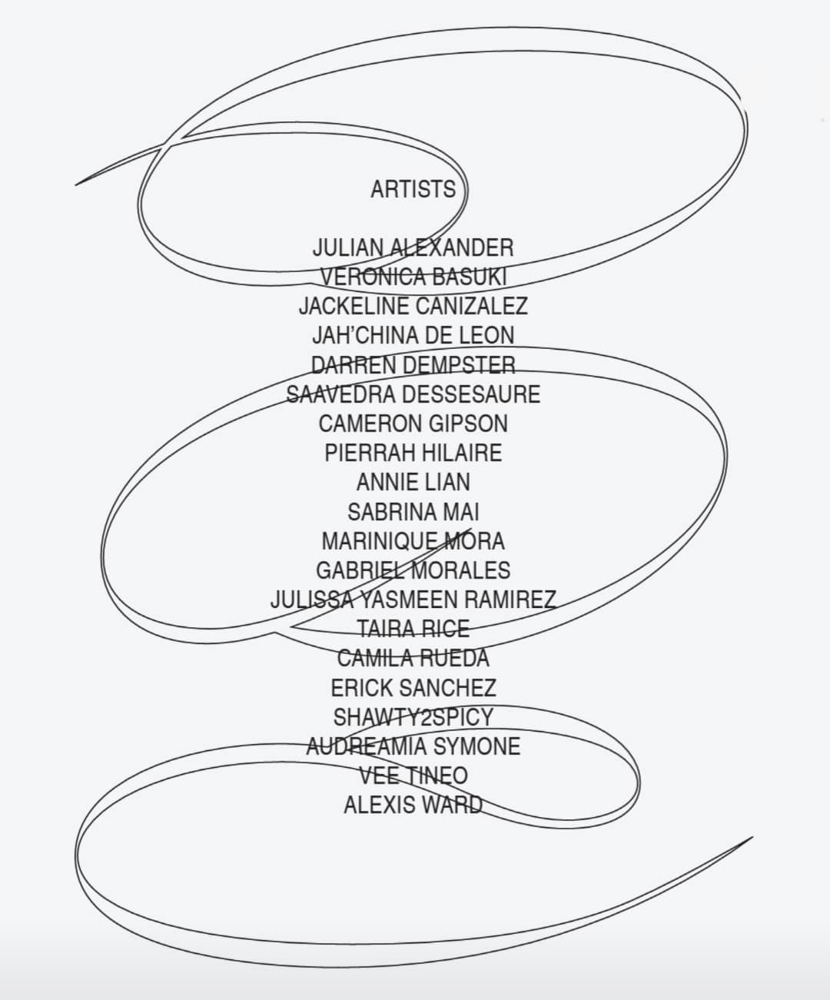
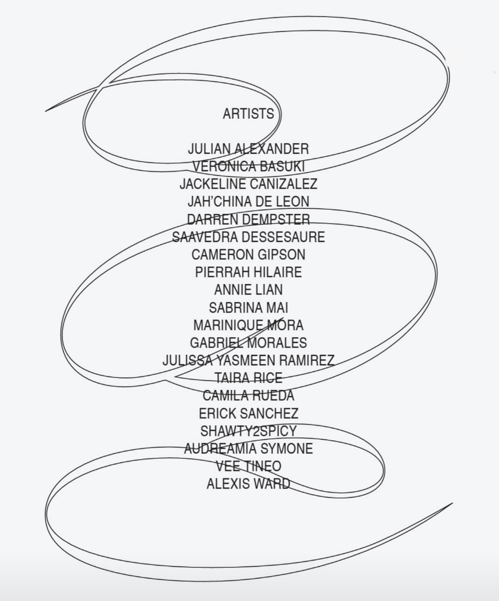
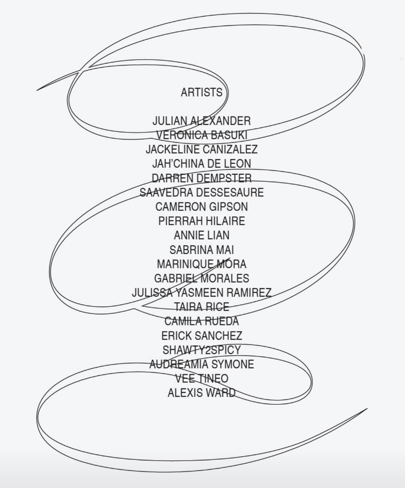

Drawing Bored is a coloring book created and curated by members of Scope of Work (SOW), a talent agency for young creatives of color.
THE COMMUNITY
Scope Of Work (SOW) is a talent development agency for young BIPOC creatives that establishes equity in the creative industry. SOW's vision is to build a more inclusive creative ecosystem. SOW’s work lives at the intersection of racial justice and financial equity for young BIPOC people ages 17 - 24 years old. SOW provides Members with free creative and professional skill-building programming, mentorship, and direct connections to paid creative opportunities.
THE COLORING BOOK
The digital coloring book was created with the intention to both motivate and inspire as society reimagines new systems of support, new methods of problem-solving, and new ways to care for one another in the wake of the global pandemic. Download it HERE!
